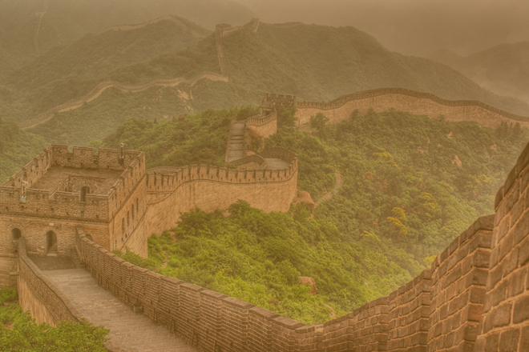

Công ty du lịch Hoàn Mỹ vừa giới thiệu tour mới khám phá đát nước Trung Hoa xih đẹp. Điểm dừung chân đầu tiên là Bắc Kinh, chinh phục Vạn Lý Trường Thành đồ sộ. Đến Tháp Tam Lăng nghe những câu chuyện huyền bí trong quá trình xây lăng cùng với lời nguyền của các thầy pháp xưa. Tham quan Cung Điện Mùa Hè- nơi Từ Hy Thái Hậu cho "đào hồ, đắp núi, xây chùa". Đặc biệt, du khách đến thăm quảng trường lớn nhất thế giới: Thiên An Môn - nơi gây cahán động dư luận quốc tế một thời ghé cổ cung- biểu tượng của nền phong kiến lâu đời. Món vịt quay Bắc Kinh sẽ làm cho du khách khó quên trong chuyến hành trình. Ngoài ra khách còn được chạm tay vào quốc bảo Trung Hoa. Tiếp đó đến Thượng hải để tham quan vườn Dự viên với kiến trúc hài hòa. Rồi dạo quanh bến Thượng Hải ngắm nhìn khu lầu Vạn Quốc. Bất ngờ lớn hơn, du khách đi đường hầm xuyên qua Hoàng Phố. Đến Hàng Châu, nghe kể về sự tích các cây cầu "cầu gãy mà không gãy, cầu dài mà không dài" - gắn liền với chuyện Lương Sơn Bá, Chúc Anh đài. Du khách có dịp mua sắm thỏa thích từ quần áo, mỹ phẩm, đồ lưu niệm, đặc biệt là ngọc trai quý hiếm... Trung hoa cổ kính, Trung Hoa hiện đại chắc chắn là điểm đến khó quên trong mùa hè.
